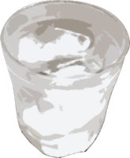
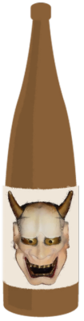
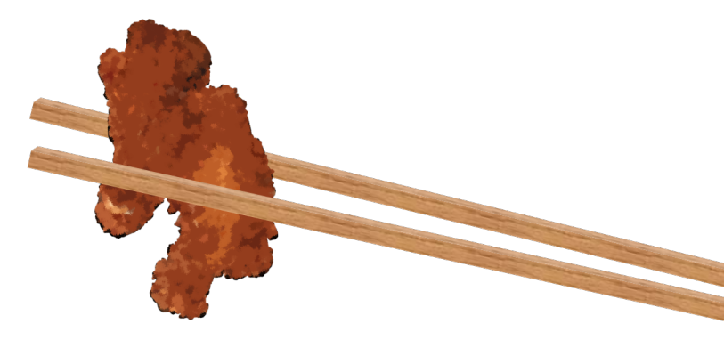

This scene is not unlocked yet in your progress
The Welcoming Rite
"Ahh, somehow that made me even more tired..."
"Sorry, seriously..."
We went back to the second-floor room, and I lay down on the tatami with Haruka.
Goto still hadn't come back.
Maybe I should go rescue her after all.
"Sorry, seriously..."
We went back to the second-floor room, and I lay down on the tatami with Haruka.
Goto still hadn't come back.
Maybe I should go rescue her after all.
But in its own way, that is a welcome, so we can't exactly brush them off.
"Hey... do you think we should rescue Goto?"
"Hmm... dunno..."
"Thought so."
"Hey... do you think we should rescue Goto?"
"Hmm... dunno..."
"Thought so."
"Haah..."
"Haah..."
Haruka and I performed a chorus of sighs.
"Haah..."
Haruka and I performed a chorus of sighs.
"Hey, hey, was your dad someone like Kotaro-san too?"
"Hmm... they look alike, but personality-wise they're totally different... Dad was more the type who seemed timid and unreliable at first glance, according to Mom, but Kotaro-san's smart and confident, and he's really respected in the settlement too."
"Hmm. What about Kotaro-san's wife?"
"Hmm... they look alike, but personality-wise they're totally different... Dad was more the type who seemed timid and unreliable at first glance, according to Mom, but Kotaro-san's smart and confident, and he's really respected in the settlement too."
"Hmm. What about Kotaro-san's wife?"
"Kotaro-san's wife died 10 years ago.
Apparently it was an accident, she fell off a cliff in the mountains."
"I see. Then Chiga-nee and Kana-chan, and Kotaro-san too, must be lonely."
"That's why, with Natsumi and the rest of you here, they're probably extra worked up. Grandma included."
"Then we really can't brush them off..."
"I see. Then Chiga-nee and Kana-chan, and Kotaro-san too, must be lonely."
"That's why, with Natsumi and the rest of you here, they're probably extra worked up. Grandma included."
"Then we really can't brush them off..."
"Still, they're getting way too carried away. Especially since Goto's popular, for better or worse."
"Popular, or... more like a toy?"
"For real."
"Popular, or... more like a toy?"
"For real."
"Come to think of it, Kana-chan jumped down from the cherry tree earlier, right? Can Chiga-nee and the others do that too?"
"Yeah, she can probably still do it. Chiga-nee lived here too, until she went to college. Well, those sisters are the only ones who can do stuff like that. Kotaro-san could never pull it off."
"Yeah, she can probably still do it. Chiga-nee lived here too, until she went to college. Well, those sisters are the only ones who can do stuff like that. Kotaro-san could never pull it off."
"Yeah, I can't picture it..."
"Well, it's a small settlement, but they seem to have their own division of roles."
"Division of roles?"
"Kotaro-san's what you'd call the brains, I guess. Grandma's assistant, more or less, and the others go out hunting and such. There are a lot of pretty rare animals around here. Maybe they'll be on the table tonight."
"Well, it's a small settlement, but they seem to have their own division of roles."
"Division of roles?"
"Kotaro-san's what you'd call the brains, I guess. Grandma's assistant, more or less, and the others go out hunting and such. There are a lot of pretty rare animals around here. Maybe they'll be on the table tonight."
"Wow! So it's that 'local food, eaten locally' thing! What kind of stuff will we get?"
"It's all super tasty! It'll probably cure Goto's worn-out look too!"
"Goto... Maybe it's about time I went to rescue her..."
"Guess there's no helping it... Oh, I was helping get dinner ready, and I snuck off. Let's go!"
"It's all super tasty! It'll probably cure Goto's worn-out look too!"
"Goto... Maybe it's about time I went to rescue her..."
"Guess there's no helping it... Oh, I was helping get dinner ready, and I snuck off. Let's go!"
Together we called out "Heave-ho" and got up.

Haruka and I headed to the big room on the first floor.
Lively voices were spilling out into the hallway.
Lively voices were spilling out into the hallway.
"So-
o-
ooo!
The reason I'm not popular is that men have no eye for quality!"
"That's right, that's right! I won't stand for any man who finds fault with my daughter!"
"Sis, you're so cool! Just strip every guy by force, tie them up, and jump them!"
"That's right, that's right! I won't stand for any man who finds fault with my daughter!"
"Sis, you're so cool! Just strip every guy by force, tie them up, and jump them!"
A strange conversation was echoing down the hallway.
It had to be the father and daughters from before, but they seemed different from earlier.
Especially Chiga-nee's voice. She sounded like a different person.
It had to be the father and daughters from before, but they seemed different from earlier.
Especially Chiga-nee's voice. She sounded like a different person.
"It's... safe to go in, right?"

"I can't guarantee your safety..."
"Roger..."
"Roger..."

When I opened the door, four figures were gathered around the dining table.
One seemed to be Chiga-nee, but the look in her eyes was different from before.
Chiga-nee and Kotaro-san were drinking the sake I'd brought, and Kana-chan was drinking juice.
And the last figure was...
One seemed to be Chiga-nee, but the look in her eyes was different from before.
Chiga-nee and Kotaro-san were drinking the sake I'd brought, and Kana-chan was drinking juice.
And the last figure was...

Kneeling formally in front of the table, with a face that didn't have even the L of "life" in it, was Goto.

And in her hand, a cup.
Kotaro-san and the others were drinking something that looked the same, but surely not...
Kotaro-san and the others were drinking something that looked the same, but surely not...
"Hey, Goto, that's alcohol!"
Haruka hurriedly snatched Goto's cup away and studied it closely.
"Okay, no sign she drank any..."
But Goto stayed frozen in her cup-holding pose, motionless as an empty shell.
"Okay, no sign she drank any..."
But Goto stayed frozen in her cup-holding pose, motionless as an empty shell.
No... looking closely, Goto's mouth was moving slightly.
She seemed to be saying something.
"Goto, what's wrong? Are you okay?"
I brought my ear close to Goto's mouth.
She seemed to be saying something.
"Goto, what's wrong? Are you okay?"
I brought my ear close to Goto's mouth.
"Virtue...
my purity...
chastity...
modesty..."
Her pupils fully dilated, she kept repeating it to herself like a broken record.
Her pupils fully dilated, she kept repeating it to herself like a broken record.
"Hey, you idiot sisters over there! What did you do to Goto!?"
Haruka raised her voice at the idiot sisters.
Haruka raised her voice at the idiot sisters.

"Whaaat? We juuust asked Goto-chan a whooole bunch of questions, that's aaall?
Ahahahahahaha!"

"Yeah, yeah! Questions, questions!"

"Questions alone wouldn't break Goto this badly!
You did this and that to her, didn't you!"

"Haruka-chan, 'this and that'...
like what, specifically?
Explain it with examples, so even an elementary schooler can understand!"
"Ngh...! You little brat...!"
"Huuuh? You can't say? Or do you not know anything, at your age?"
"Shut up! Believe it or not, I actually pay attention in class!"
"Ngh...! You little brat...!"
"Huuuh? You can't say? Or do you not know anything, at your age?"
"Shut up! Believe it or not, I actually pay attention in class!"
"Whoa! Schools in Motoki-cho teach stuff like that too!
So,
so,
do they have hands-on learning and stuff?"
"Of course they don't, you damn brat!"
"Of course they don't, you damn brat!"
"Nooow, now, Haruka, Kana, both of you.
Me and Kana were juuust having a contest over which of us could name more good things about Goto-chan, riiight in front of Goto-chan, that's aaall?"

"Yeah, yeah! At the end, we had a contest over who could guess Goto-chan's boob size more accurately just by palpation!
But Goto-chan's been like this the whole time and won't tell us the right answer."
"That palpation is totally the reason!
Hey, Goto, snap out of it!
Hey!"
Haruka shook Goto's shoulders hard.
Haruka shook Goto's shoulders hard.
"My...
virtue...
modesty...
decency...
faithfulness...
principles..."
Goto's state didn't change.
"Come on, Goto, are you okay?"
I sat down next to Goto and stroked her head.
"My...
Goto's state didn't change.
"Come on, Goto, are you okay?"
I sat down next to Goto and stroked her head.
"My...

Ah!
K-Kogori-senpai!?"
At last, a little life came back into Goto's eyes.
At last, a little life came back into Goto's eyes.

"Senpai, that was so scaaary!"
Goto threw her arms around me and burst into tears.
"Senpai, those two are cyborgs! My ×××× 's color, ○○○○ 's shape, △△△△ 's size, they guessed them all exactly! Those odd eyes have been modified for infrared or X-ray vision! They see right through everything! Senpai, hurry and cover up!"
Goto threw her arms around me and burst into tears.
"Senpai, those two are cyborgs! My ×××× 's color, ○○○○ 's shape, △△△△ 's size, they guessed them all exactly! Those odd eyes have been modified for infrared or X-ray vision! They see right through everything! Senpai, hurry and cover up!"
A fanciful remark, so unlike Goto.
She must have tried to logically explain the high precision of pseudo-medical practices like palpation and X-ray vision, and shorted out her circuits.
Even with Goto's brains, it seemed this was impossible to figure out.
She must have tried to logically explain the high precision of pseudo-medical practices like palpation and X-ray vision, and shorted out her circuits.
Even with Goto's brains, it seemed this was impossible to figure out.
"Well, that's just experience talking! I'm hitting puberty too, after all!"
Kana-chan was puffing out her chest proudly, for some reason.
Kana-chan was puffing out her chest proudly, for some reason.
"Ahahaha! Riiight, right! Experience, experience!"
Red-faced and in high spirits, a cup of sake in one hand: Chiga-nee.
Red-faced and in high spirits, a cup of sake in one hand: Chiga-nee.
"Well, fine, forget that. Why'd you try to get Goto to drink!?"
"Ooh? We weren't triiying to make her drink or anything? We asked Goto-chan whether she wanted sake or juice, and she wouldn't answer, so we just put that cup in her hand for now, that's aaall?"
"Ooh? We weren't triiying to make her drink or anything? We asked Goto-chan whether she wanted sake or juice, and she wouldn't answer, so we just put that cup in her hand for now, that's aaall?"

"That's what trying to make her drink means! And don't give a high schooler the option of alcohol in the first place!"
With that, Haruka sat down next to Goto.
"Nfu, so cute..."
"Guhehehehe..."
Between me and Haruka sat Goto, and the sisters were leering at her.
Even just catching the edge of that gaze felt poisonous.
Between me and Haruka sat Goto, and the sisters were leering at her.
Even just catching the edge of that gaze felt poisonous.

"Hah hah hah!
Glad to see everyone's hit it off!"
Laughing at all this without a care was Kotaro-san.
Laughing at all this without a care was Kotaro-san.

"Oh my, we're all gathered here!
Let's have dinner soon!"
Out of the kitchen came Obasan.
Seen next to all this, even Obasan looked normal.
Out of the kitchen came Obasan.
Seen next to all this, even Obasan looked normal.
"Huh? Where's Grandma?"
"She said getting ready would take a while, so go ahead and eat first!"
Getting ready?
Getting ready?

―The table was covered with dishes, and Kotaro-san stood and raised his nearly empty cup.

"Um, well, let's skip the stiff speeches. Anyway, I'm counting on everyone for tomorrow's memorial service.
So, cheers!"

"Ah, wait! We don't have drinks yet..."
Without missing a beat, Chiga-nee set a big 1.8-liter bottle on the table.
Without missing a beat, Chiga-nee set a big 1.8-liter bottle on the table.

"Haruka, this stuff is good! It's our secret-stock shochu 'Shinigami,' made with Arata's famous spring water 'Witch'!" [TN: shochu: a Japanese distilled liquor]
What Chiga-nee had set down was an ominous 1.8-liter bottle with a demon-woman Noh mask on its label.
There's probably poison in it.
What Chiga-nee had set down was an ominous 1.8-liter bottle with a demon-woman Noh mask on its label.
There's probably poison in it.

"Chiga-nee, we're high schoolers!"
"What!? Don't tell me you're in high school and you've never had a drink!? Ugh, lame!"
"Just give us normal drinks already!"
"What!? Don't tell me you're in high school and you've never had a drink!? Ugh, lame!"
"Just give us normal drinks already!"
―Somehow we got them to give us drinks without alcohol, toasted again, and finally got to eat dinner.
But,
every dish was something I'd never seen before.
Were these the ingredients Haruka had mentioned earlier, the ones you can only get in Arata?
"Come on, you guests, dig in. Everything here is something you can only get in Arata.
This is deep-fried giant bullfrog,
this one's shinigami lizard sashimi,
and this one's simmered poison-free monkshood―"
"Senpai... I have no appetite..."
Still lifeless, Goto muttered under her breath.
Still lifeless, Goto muttered under her breath.
I felt the same. Just from the names, it was all bizarre food.
When I looked at Haruka, she was eating happily without the slightest hesitation.
When I looked at Haruka, she was eating happily without the slightest hesitation.
"It might all be stuff you're not used to, but try it.
It's good!"
With Haruka pushing it this hard, I couldn't very well leave it untouched.
"Goto, let's eat at least a little. It won't kill you. Besides, Haruka's mom made it, so the taste is definitely fine..."
With Haruka pushing it this hard, I couldn't very well leave it untouched.
"Goto, let's eat at least a little. It won't kill you. Besides, Haruka's mom made it, so the taste is definitely fine..."
"Okay..."

I picked up a piece of fried frog with my chopsticks.
Goto reached for the shinigami lizard sashimi.
"Senpai, are you prepared...?"
It was the first time I'd seen Goto this listless in front of food.
"Yeah... I'll do my best."
Everyone was watching us.
Even if it's a lie, I have to say it's delicious...
Goto reached for the shinigami lizard sashimi.
"Senpai, are you prepared...?"
It was the first time I'd seen Goto this listless in front of food.
"Yeah... I'll do my best."
Everyone was watching us.
Even if it's a lie, I have to say it's delicious...
............
............
............
!?
The taste and aroma were so utterly unknown that I collapsed.
"Hey, Natsumi! Hey!"
As my consciousness faded, Haruka was calling me.
The taste and aroma were so utterly unknown that I collapsed.
"Hey, Natsumi! Hey!"
As my consciousness faded, Haruka was calling me.

I saw a vision of paradise.
It wasn't that it tasted deathly awful.
It was the opposite.
A vivid aroma burst in my mouth, so good it seemed not of this world, and the savory flavor of the meat soaked into every single cell of my mouth.
And at this rich fragrance rising into my nose, my nasal passages sighed in rapture, and the walls of my esophagus danced a delightful dance of joy.
Trembling all over, I got up.
It wasn't that it tasted deathly awful.
It was the opposite.
A vivid aroma burst in my mouth, so good it seemed not of this world, and the savory flavor of the meat soaked into every single cell of my mouth.
And at this rich fragrance rising into my nose, my nasal passages sighed in rapture, and the walls of my esophagus danced a delightful dance of joy.
Trembling all over, I got up.
It's delicious... way too delicious...!
Unbelievable! I'd believed salmon roe sushi was the ultimate, but this was a shock that easily overturned that.
It's so delicious it made me faint!
Unbelievable! I'd believed salmon roe sushi was the ultimate, but this was a shock that easily overturned that.
It's so delicious it made me faint!
When I looked at Goto, life was rapidly returning to her haggard face, and she had her usual Goto expression again.
"Niimura-senpai... I want white rice...
"Niimura-senpai... I want white rice...

I want a big bowlful!"
"All right, leave it to me!"
Haruka ran off to the kitchen.

"Hah hah hah! You thought we were feeding you some awful weird food, but one bite and you got surprised all over again, right?"
"Yes! I've never eaten anything this delicious!"
"Yes! I've never eaten anything this delicious!"
"Here you go, Goto."
Haruka handed Goto a heaping bowl of rice.
Haruka handed Goto a heaping bowl of rice.
I shed tears of gratitude for this blissful time.
This is what the body truly craves.
This is what a meal is truly meant to be.
I had truly come to understand the meaning of 'itadakimasu,' the greeting that gives thanks for the lives of the ingredients.
This is what the body truly craves.
This is what a meal is truly meant to be.
I had truly come to understand the meaning of 'itadakimasu,' the greeting that gives thanks for the lives of the ingredients.